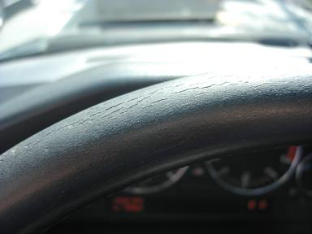
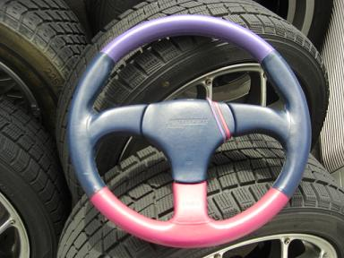
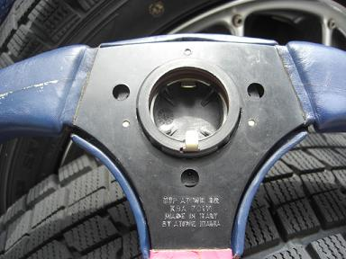
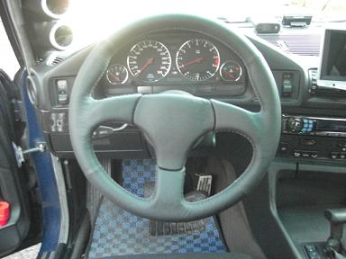
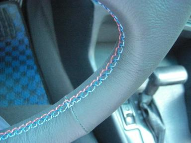

2008/3/17 ステアリングの張替え
 このE34も今年で16年目・・・ さすがに内装各所が劣化してきました。 |
 そんなことで、今回入手したのは36パイのatiwe |
 ３穴なので専用スペーサーが必要だったり・・・難題がたくさん。。 そこはどうにかなるだろう。ってことで |
 ロブソンレザーにお願いすること１週間。。 黒に張り替えてもらいました＾＾ |
 せっかくなのでMステッチにしてみました。 今回、張り替え業者５社に見積もってみましたが、同じ条件を提示しても上は10諭吉～下は1.8諭吉～まで様々でした。 手に入りにくいタイプや愛着のある物は、張替えの選択肢もアリだと思います。 今回張替えにかった費用は、新品Mテクステアリングの約半額（もしかしたらそれ以下？）です＾＾ |